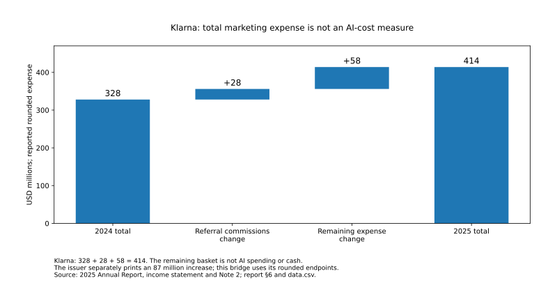

Is AI a Bubble? · Topic guide
Customer demand
Useful work, a signed purchase, actual payment and retained value are different tests. Buyers can gain by expanding service or replacing existing expenditure.
Updated as new research is ready
Do useful tools become durable paid businesses?
Yes in important observed respects—but not at one uniform margin or for every supplier. A priced public-service continuation, recurring application business and internal production substitution support purposeful buying. Customers can value more service without a payroll cut; suppliers can grow while replacing an old bill. The new document-work comparison adds a concrete efficiency mechanism, but only output that meets the buyer’s requirements earns the claimed benefit.
A smaller component bill can benefit the buyer or the application that owns the workflow. The supplier still needs receipts sufficient for checking, reliability, continuing development and all other costs. Cheap generation does not by itself establish cheap accepted work or durable profit. The evidence supports selective useful expansion; it does not measure every provider’s margin, guarantee service continuity or validate every infrastructure investment.
For the detailed evidence, the September 19 demand investigation retains its studies; September 29 payment-and-capture investigation follows recurring business and full expenses; October 5 buyer inquiry examines actual purchasing decisions; and October 6 efficiency investigation uses a different, documented workload. None silently updates the others’ populations, outcome measures or cash accounts. All evidence routes.
Start with the complete useful outcome
A resolved support issue, accepted software change or better advertising outcome is more informative than a token or a seat. The buyer's benefit depends on quality, integration, review and rework. Time saved can create more output or less drudgery without reducing payroll. Neither an outcome label nor a workload equivalent automatically measures avoided cash expense.
The support evidence contains a credible productivity improvement from assisting human agents. The coding evidence includes a positive multi-company field study and a negative experiment among experienced maintainers; different tasks, vintages and estimands make averaging their headlines meaningless. Office assistance can save email time without establishing an equivalent employer-profit gain. Current paid-seat disclosures do not silently update those older study results. Study designs and buyer economics.
The earlier named-buyer case follows Seagate's reported platform replacement and Freddy deployment. It is stronger than an anonymous adoption claim, but the undated vendor/customer story is not an invoice audit or causal saving study. Seagate's operating resources demonstrate a possible buying budget, not the identified source of its software payment. Buyer-to-provider chain.
A real order can buy more service without buying payroll savings
North Northamptonshire Council chose a £48,000 extension of its Magic Notes pilot, signed in September 2025 for September 8, 2025–September 7, 2026. The contract buys 11,900 recording hours, 100 reports, unlimited users and included supplier support/onboarding. These are entitlements, not observed utilization or delivered assessments. The fee excludes contractual VAT, while the notice’s VAT fields conflict. Exact purchase evidence and terms.
Buyer-budget explanation · evidence and assumptions kept separate
One purchase, four different claims
Scroll horizontally on a narrow screen to inspect the complete figure.
The signed post-pilot decision is affirmative evidence of buying. Automatic twelve-month renewal absent sixty-day notice is different: it can preserve an obligation without a fresh decision. The ninety-day price-notice rule and data-return conditions make the choice more specific, but do not prove that a notice, renewal or cancellation actually occurred. A £57,600 secondary spending entry lacks a verified original-file/invoice match. A later, broader £51,000 five-month package is secondary reported evidence, not a comparable annual price or a verified extra payment. The old and new terms are not added as duplicate obligations. Voluntary choice, contractual persistence and unverified receipt.
Officers said in June 2026 that the tool contributed to 14% more therapy assessments. The board record supplies neither a fixed-resource comparison nor an identified causal share, case-mix adjustment or annual measurement window. Separately, the CQC reports staff accounts of clearer records and more direct engagement; it does not validate the 14%. Consent, the manual alternative, review/editing and transfer into case-management systems still require work. What was observed and what the workflow still costs.
Two counterfactuals · not an observed return or payroll saving
A 14% output gain answers two different budget questions
Scroll horizontally on a narrow screen to inspect the complete figure.
With an assumed £12,000 annual burden beyond the fee, the two 14% thresholds rise to £428,571 and £488,571. At an assumed 7% retained uplift they rise to £857,143 and £917,143. Those are sensitivity assumptions, not measured internal costs or confidence intervals. Lower usage also spreads the bundled price over fewer hours: allocating the entire fee to audio gives about £4.03 per allowed hour at full use or £8.07 at half use—not a stand-alone tariff. The full threshold table; utilization and cost allocation.
The next decision needs comparable accepted assessments, worthwhile additional service, actual use and all incremental costs. Included vendor onboarding must not be charged twice, but staff attendance and review are different resources. Already-spent training belongs in historical recovery, not a fresh renewal bill; future migration can matter. A higher assessment count may also create downstream care costs rather than reduce the whole care budget. Renewal versus recovering the original implementation cost.
Visual explanation
A real payment chain is not three independent profits
Scroll the figure horizontally to inspect all labels.
Ask which customer and which dollars persisted
Freshworks' company-wide recurring-revenue retention is evidence of persistence, not an AI-product renewal ledger. Reported retention declined from 106% to 104% across the June 2025–2026 comparison; constant-currency retention rose from 104% to 105%. Both are needed to interpret the change. They include expansion and contraction within the metric's customer base; neither means every customer renewed or every dollar was collected. Definition, currency comparison and revenue bridge.
The quarterly revenue reconstruction attributes growth to both existing and new customers. That supports commercial substance. Paid AI accounts and a reported Freddy ARR threshold separately support a paid-product case, but their different dates and lower bounds cannot supply an average invoice, full-year retention rate or standalone cash margin.
Earlier transaction-panel evidence also showed repeat buying and multi-provider purchasing. It did not identify all buyer funding, net out every credit or create a representative national cohort. Continued use of AI can persist while spending shifts between vendors. The relevant question is the same customer's net payment through renewal—not whether a recognizable logo appears on a customer list. Earlier purchasing evidence and its limits.
Look below gross margin, then reconcile cash
Freshworks' April–June 2026 revenue was $237.377 million. Its gross margin was about 84.8%, but after operating expenses its operating profit was $6.060 million, a 2.55% margin. That is genuine progress from a quarterly operating loss, not evidence that 85% of each subscription is distributable AI cash. The first half remained loss-making on the operating measure. Full expense account.
Stock-compensation expense fell $11.432 million, an amount equal to 77.7% of the $14.716 million quarterly operating-income improvement arithmetically. This is not a causal estimate of AI efficiency. The compensation change is already in expenses; it must not be counted again as a separate saving. A noncash expense is not economically free to shareholders.
Cash is a further test, not another name for operating profit. Freshworks' first-half operating cash less cash property/equipment and capitalized software was $107.120 million in 2026, compared with $107.440 million in 2025. Its adjusted free-cash-flow measure rose because it added back more specified costs that were actually paid. Both observations can be true. Cash reconciliation, including the signed working-capital correction.
Choose the accepted outcome before comparing prices
In document conversion, the organization pays, while a document team checks and integrates the result. Correct reading order, usable tables and source links can matter more than a completed model call. A corpus may permit rejected pages if the retained collection still meets its purpose; a fixed set of required invoices cannot substitute easy pages for missing ones. The historical downstream score improvement supports a credible open-pipeline alternative, not a measured customer acceptance rate. Workload and party definitions; what the quality evidence establishes.
Accepted-work economics · evidence and assumptions distinguished
How much extra work can the cheaper component afford?
On a narrow screen, scroll within the figure to inspect the labels.
At an assumed $40/hour, assigning the whole conditional $816.70 difference per million inputs to extra checking allows only about one additional thirty-second intervention per 408 inputs. That is an additional allowance, not total review time. Setup, migration and other extra burdens consume the same allowance. Equal acceptance and genuinely common costs are prerequisites; neither has been measured for a current buyer. The source’s printed cost denominator conflicts with its runtime arithmetic, and that conflict is preserved rather than presented as an author-confirmed correction. The exact reconstruction.
The more expensive service can also be the better purchase. The OCR4-versus-OCR3 batch premium would be offset by 0.09 seconds less review per input at the same assumed $40/hour, with equal volume and other costs. This is a required improvement—not an observed effect. More useful provenance or fewer consequential errors may justify a premium, but those gains need task-specific evidence. Different offered work, not a uniform price trend.
This is a separate workload from the council’s assessments and Klarna’s campaigns. Their reported gains, costs and currencies are not used as OCR acceptance or review inputs. For interactive coding, the newly inspected credit rules instead establish what consumes a purchased allowance—not a count of accepted code or a vendor cost account. Different work, different billing rights.
Visual explanation
A positive cash business, but not the same growth in every measure
Scroll the figure horizontally to inspect all labels.
A separate AI invoice is not the only way to earn
Meta's advertising business provides a different route. Better recommendations can improve an existing paid service. A provider-authored production experiment reports 4.3% more conversions in Facebook Feed and Reels. That supports a bounded monetization mechanism, not a 4.3% increase in worldwide advertiser profit or Meta's total cash. The publication date is January 27, 2026; the experiment's full fieldwork calendar and design details were not established for independent replication. Paper and limits.
An illustration holds that 4.3% outcome gain fixed while assuming 2% more buyer spending. Gross platform receipts rise, yet buyer cost per conversion is about 2.21% lower. This is not an observed budget change or a profit calculation: it shows why customers and providers can both gain. Extra service costs, auction responses and the value of each conversion remain separate. Shared-gain calculation.
The whole company's accounts cannot attribute all additional advertising revenue—or every cost and capital purchase—to that experiment. Meta's second-quarter operating income fell while its half-year operating income rose; cash after the stated capital payments fell in both comparisons. Real embedded monetization and a demanding investment bill can coexist. Matched company accounts.
When the buyer replaces an existing bill
Klarna’s marketing-production evidence concerns doing existing work differently, not its earlier customer-support assistant. The company reported agency spending falling from $33m in 2022 to $8m in 2024. Separately, it attributes 37% of a $7m first-quarter 2024 versus first-quarter 2023 external-supplier reduction to AI: $2.59m. The $25m agency decline, $2.59m quarter component and $10m annual estimate have different or overlapping boundaries and are not amounts to sum. Attribution remains management’s, not a complete causal net return. The dated expenditure and workflow evidence.
Moving production in-house retains tool fees, prompting, finishing, brand/legal checks, localization and other costs. A reported image-production cycle shortening from six weeks to one week is elapsed calendar time, not thirty-five staff-days saved. The missing costs and quality-adjusted output remain material. The quarterly attributed gain survives only if net incremental costs not already deducted fit within $2.59m; that is a cost envelope, not observed surplus. Full-cost interpretation.
Reported annual expense · not a cash waterfall or AI-cost allocation
A smaller production bill can coexist with a larger marketing budget
Scroll horizontally on a narrow screen to inspect the complete figure.

In Q2 2026 the rounded marketing expense rises from $93m to $128m. The $35m difference contains an $8m increase in the share-based-payment adjustment and $27m in the remainder; neither is an AI allocation or a cash waterfall. The issuer’s adjusted $111m differs from the displayed $128m − $18m = $110m because of rounding. These quarterly figures do not extend the earlier saving into another period. Quarterly reconciliation and its limits.
The buyer can retain part of the benefit or spend more elsewhere without allocating that saving to a particular vendor. Internal adoption can persist while the upstream tool changes. That supports demand for useful AI generally, not guaranteed renewal or full margins for every supplier. How substitution changes the demand inference.
What does this establish for the build-out?
The buyer-side addition makes selective adoption more economically credible, while narrowing how much of its benefit can be counted as new financial resources. No named link allocates NNC or Klarna’s marketing work to the facilities in the completion study. Buyer value does not replace that study’s funding conditions or the earlier capital-recovery and ownership tests.
It strengthens paid persistence and the possibility of retained provider value. It does not supply a universal provider margin or demonstrate sufficient cash for all physical investment. Application hosting costs are already in application expenses; adding the entire upstream investment bill again would overstate costs. Omitting the provider's development, distribution or replacement needs would understate them.
A protected capacity contract can keep receiving payments even when a retail application's pricing changes. A well-funded customer can honor an expensive purchase while earning a poor return. A lower future equipment price can benefit a new buyer while impairing an earlier owner's recovery. The funding guide, capacity guide and investment-return guide follow these different claims.
The favorable test is continuing net payment together with full-cost cash capture and adequate renewal economics. The adverse test is continued use with weaker retained dollars, higher cost or financing that absorbs the gain. A change in any one of these needs its own evidence; the absence of a disclosed AI margin is not evidence that the margin is zero.
The infrastructure continuation evidence now supplies a complementary favorable example: CoreWeave reports a newly signed contract for an older A100 design into 2029. Continued demand for adequate service need not require every buyer to choose the newest hardware. It is still not a same-customer renewal rate, a physical-age record or measured lifetime cash. The contract observation and its limits.
A posted cheaper node is not necessarily a cheaper completed task: quality, latency, storage, actual speed and migration determine the comparison. The supplied equal-output tariff calculation solves a required speedup, not observed performance or achieved rental yield. This strengthens the reason to measure useful service and complete costs rather than transport application retention percentages into a GPU investment model. Comparable service before comparable prices.
A real customer payment is one party’s receipt and another’s cost
The new joint-cash case follows CoreWeave’s hosting payment to Core Scientific. It does not assign any particular Microsoft, Meta or OpenAI workload to those sites. Whole-company operating cash is already net of operating payments; it is not a second pot of gross receipts available to pay the same supplier again. The connected perimeter.
The issuer’s combined tenant-credit/other-cost row supports a range for the net payment, not a complete customer budget. In 2027 it is $1.045–1.346 billion before separately borne construction, GPUs and other tenant uses. The unknown credit split is not a discount the buyer can choose. Future resources allocated to this exact purchase remain unmeasured. Payment allocation and its limits.
This preserves the favorable demand findings above while limiting what they can prove. Freshworks’ company-wide persistence and Meta’s provider-reported conversion gains are not measurements of CoreWeave’s site-specific future cash margin. A negotiated or legally earned payment reduction can help the buyer while reducing host receipts; it is not automatically a new joint saving. Genuine delivery-cost improvement would be a different route to shared gain. A worked transfer example.
Choose the depth you need
Cheap extraction is not the same as cheap accepted work — full October 6 investigation: source-vintage comparison, the buyer’s extra-work allowance, remaining operator costs, finite capacity and a contrasting coding entitlement.
Buyer demand and budget substitution — full October 5 investigation: signed buying, service capacity, avoidable spending and complete-cost limits, with source records and reproducible calculations.
For complete study designs, buyer illustrations and the earlier pricing evidence, read Real customers, uneven capture, dated September 19. For company-wide retention, cost and cash bridges and the embedded-monetization countercase, read Paid persistence is real; the division of the gain is not uniform, dated September 29. Each investigation carries its own sources, downloads and limits.
This maintained guide is not an additional research investigation or a new observation of every underlying fact. The complete catalogue keeps all current dated and historical reports accessible. The current answer explains how the combined evidence bears on the bubble question.